Design Brief Document
1Overview
This document sets the look of SummaRace: colours, fonts, components, and how each screen should look, so new screens match the ones already built.
2Brand identity
Bright, friendly, readable. A cartoon "sticker" world: white and cream cards with thick plum outlines on a bright sky. Big rounded buttons that look pressable. Teacher Mira is always nearby, so the learner never feels alone with a hard question.
For 9–10 year olds
Large text, large tap targets (answers are at least 58 px tall), one task per screen.
Reading first
Story text uses Andika, a font made for early readers. Game chrome never covers the story.
Kind feedback
Wrong answers shake and turn red, but the right answer is never given away. Mira always offers to show the story again.
Game energy
Stars, coins, medals, confetti and a chase scene make finishing a level feel like a win.
3Colour palette
Core
Story parts (SWBST)
Each story part keeps one colour everywhere: the race, story order and summary feedback.
Difficulty
The game has one bright look. It does not switch to a dark theme.
4Typography
| Role | Font | Used for |
|---|---|---|
| Title | Luckiest Guy | Logo, "AMAZING!" / "GREAT JOB!", flash words in the race, score numbers, the story's first letter. |
| Interface | Fredoka (variable, 300–700) | Buttons, labels, tags, step bar, popups. |
| Reading | Andika (regular, bold) | Story pages, questions, answers, the summary box. |
| Back-up | Lilita One, Atkinson Hyperlegible | Listed second in the font stacks; shown only if the main font cannot load. |
Headings are white with a thick plum outline on the sky, and plum on cards. Answer text is about 18 px (1.12 rem).
5UI components
| Component | Look | Use |
|---|---|---|
Main button (.btn.go) | Green, rounded, white text, darker bottom edge that presses down 4 px on tap. | The one next step on a screen: Let's go!, Answer the question, Check order. |
Second button (.btn.alt) | Purple or white with plum outline. | Back, Read the story, Download CSV. |
Round icon button (.cbtn) | Circle with an icon; red, green, blue, yellow variants. | Home, Settings, Close (red ✕), Listen (yellow), Map / Replay / Next. |
Answer option (.opt) | White card with a coloured letter badge A/B/C/D. Turns green and pops when right, red and shakes when wrong. | Page questions, main idea. |
| Race lane chips | Three coloured chips (blue, orange, purple) with A/B/C, one per lane, under the question. | Race questions. |
Slot (.slot) | Dashed box with a SWBST colour label; solid when filled, green with ✓ when right. | Story order. |
Feedback row (.fbrow) | Green "✓ Somebody" rows and red "Add: But" rows. | Summary check results. |
Popup (.modal .panel) | Cream panel with a purple ribbon title and a red close button. | Who is playing?, Settings, Credits, Read it again. |
| Teacher Mira dock | Mira's picture at the bottom left with a speech bubble; folds to just her face. | Every screen except the race and records. |
Step bar (.steps) | 4 numbered dots: Read & answer, Race, Story order, Summary. Done steps show ✓. | Top of every level screen. |
6Screens
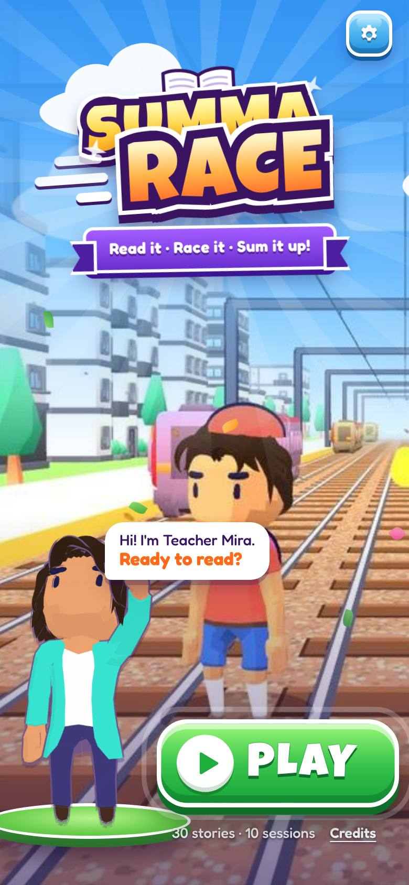
Title
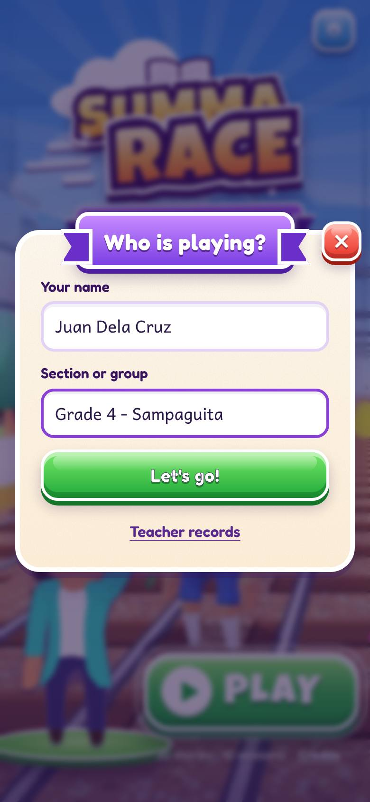
Who is playing?
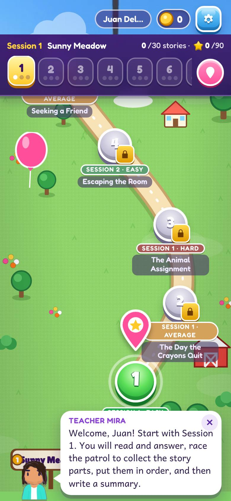
World map
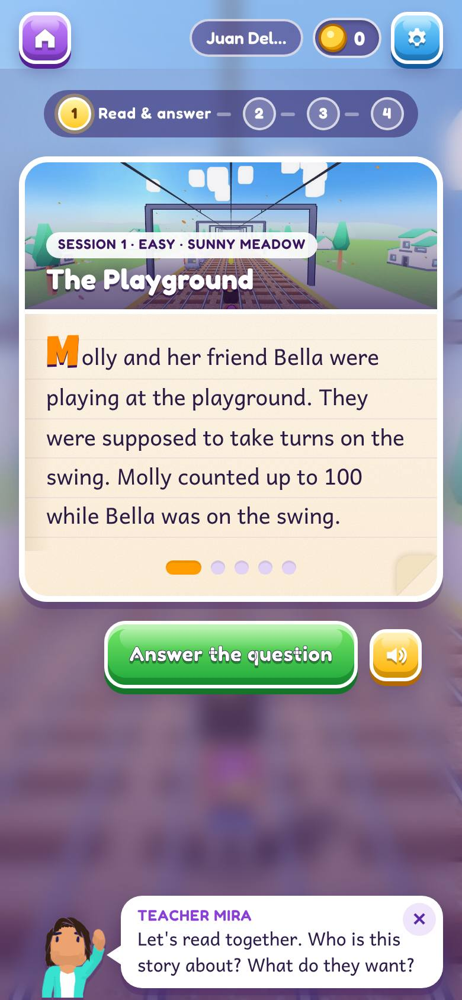
Read a page
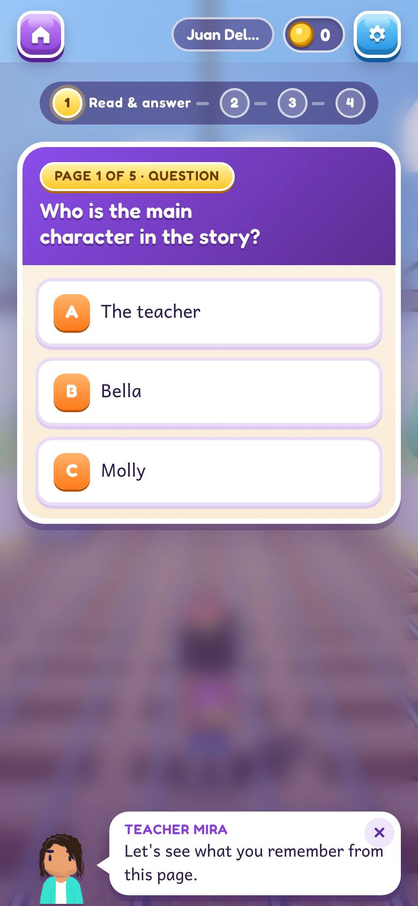
Page question
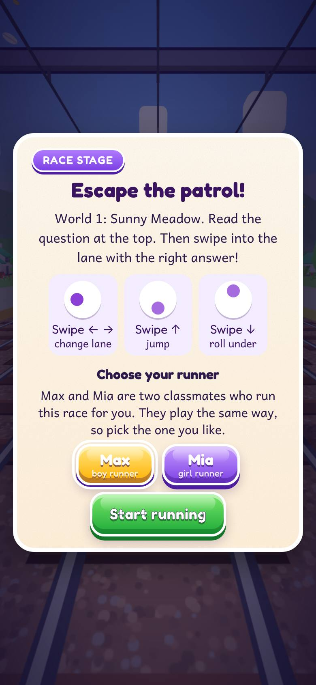
Race start card
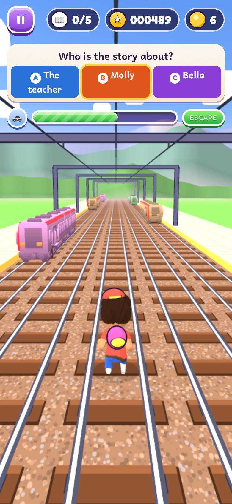
Race: answers in lanes
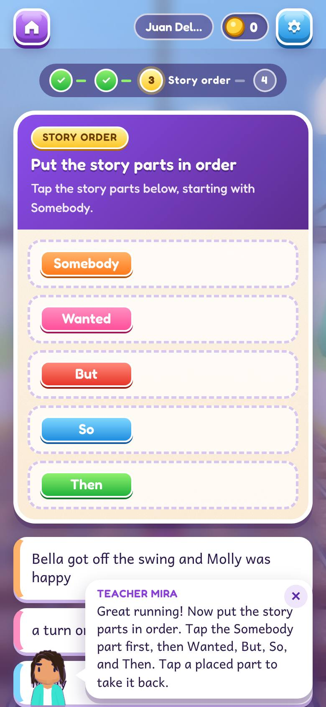
Story order
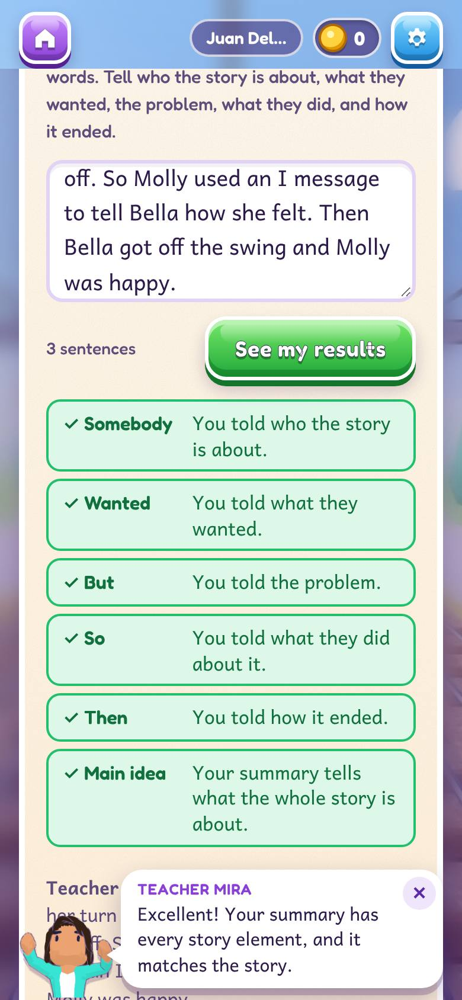
Summary feedback
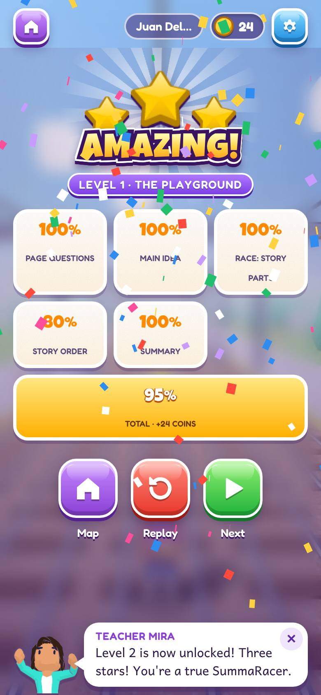
Results
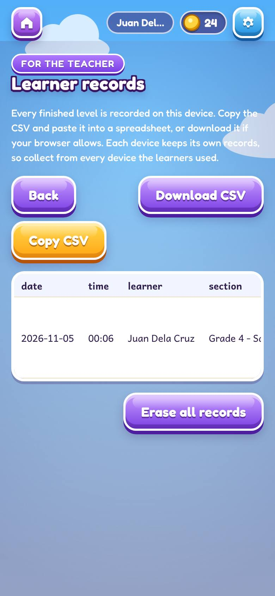
Teacher records
Screenshots were taken in headless Chromium, so the 3D race uses software graphics and looks a little softer than on a phone.
7Worlds
| World | Levels | Race scenery | Screen backdrop |
|---|---|---|---|
| Sunny Meadow | 1–6 | Grass, flowers, houses, trees | ui/world-0.jpg |
| River Bend | 7–12 | River, houses, pines, mist | ui/world-1.jpg |
| Story Town | 13–18 | City buildings, trees | ui/world-2.jpg |
| Palm Beach | 19–24 | Sand, sea, palms, umbrellas | ui/world-3.jpg |
| Summit Peak | 25–30 | Snow, mountains, pines | ui/world-4.jpg |
The race sky cycles through 6 times of day (morning to sunset) by level, so neighbouring levels look different.
8Motion and sound
- Buttons press down on tap. Right answers pop, wrong answers shake. Screens slide in. Confetti on the results screen for 4.5 s.
- If the phone asks for reduced motion, all animations and confetti are turned off.
- Short sound effects for taps, coins, right, wrong, jump, bump and win. Music lowers while Mira talks.
- Voice, sound effects and music each have their own switch in Settings.
9Accessibility
- Every icon button has a text label for screen readers. Mira's bubble is a live region, so her lines are read out.
- Focus outlines are a thick pink ring.
- Answer order is shuffled, so colour or position never tells the answer.
- Every story page can be read aloud with the Listen button.